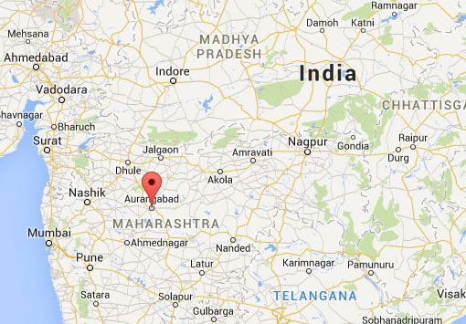

Aurangabad
Location
Aurangabad is located in the Indian state of Maharashtra, which is also home to Mumbai. Note, the city has recently voted to rename itself to Sambhajinagar.
Aurangabad is 5:30 hours forward from GMT in the winter, and 4:30 hours forward in the Summer.
About Aurangabad
Aurangabad is an old city founded a little before it was captured by the Mughal Empire. Once it was fully integrated with the empire, its name was changed to Aurangabad by the Mughal Prince Aurangazeb who was in charge of the administration of the region.
When the prince took the throne, he shifted the capital to Aurangabad for his future campaigns against the southern Indian states.
This resulted in a rapid urbanisation and expansion of trade into the city which cemented it as a prominent settlement of the subcontinent.
Aurangazeb eventually constructed his own Taj Mahal, a smaller version of his grandfathers, and it has become known as the "Mini Taj".
Today, Aurangabad is still a large city of the state of Maharashtra, although it is now a city that focuses on tourism and silk than war and trade.s